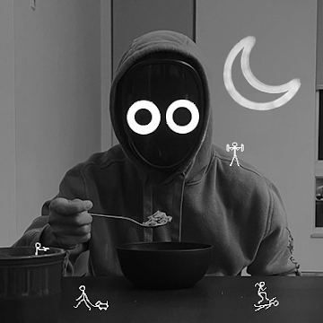

Cinematic camerawork
Purposeful camera paths and framing that give your world scale, atmosphere and focus.
NOW BOOKING COLLABORATIONS · LIMITED PROJECT SLOTS
MINECRAFT RECORDER
Cinematic Minecraft footage for creators who care how their worlds are seen. Precise camera work, deliberate composition and a dependable creative partner.
REPLIES WITHIN 24 HOURS · AVAILABLE FOR SELECT PROJECTS

TOBIUNPHASED · RECORDER
I’m Tobi, a Minecraft recorder focused on capturing gameplay with atmosphere, precision and a cinematic point of view.
From controlled camera movement to the small details that make a scene feel considered, every recording is shaped around the creator’s vision and the story the footage needs to tell.
Recording built around clarity, control and the visual language of your project.
Purposeful camera paths and framing that give your world scale, atmosphere and focus.
Controlled movement, reveals and perspective shifts designed to hold attention.
Thoughtful angles, depth and visual balance that make each location read clearly.
Organised communication, clear expectations and footage delivered to the agreed brief.
A selection of recording work. Select a frame to play the full video.
01/04
Three clear stages. No unnecessary complexity. The work stays aligned with your brief.
THE BRIEF
We discuss your concept, references, schedule and the exact footage you need.
THE RECORDING
I record the scenes with considered camera movement, composition and attention to detail.
THE HANDOFF
You receive the agreed footage in the requested format, ready for your editing workflow.
Flexible recording support for one-off productions and creators who need a consistent partner.
DURATION · AGREED PER BRIEF
DURATION · MONTHLY / RECURRING
SERVICE SCOPE IS CONFIRMED BEFORE EVERY PROJECT. ALL QUOTES ARE CUSTOM.
Share what you’re making, what you need recorded and when you need it. I’ll respond with the next steps.
Send the briefTell me about the project, references and timeline.
Align on the detailsWe confirm scope, availability and a custom quote.
Get to workOnce approved, I begin recording to the agreed plan.
DIRECT CONTACT
A few practical details to help you plan your project.
Turnaround depends on the size of the project, recording complexity and current availability. Share your deadline in the first message and I’ll confirm a realistic schedule before work begins.
Delivery format, resolution, frame rate and aspect ratio are agreed around your editing workflow. Include your technical requirements in the brief so they can be confirmed upfront.
A short project description, visual references, the scenes or locations you need, your preferred style and your deadline. I’ll ask for any missing details before confirming the scope.
Revision expectations are agreed before the project starts. The number and type of changes depend on the brief and are included in the confirmed project scope.
Send an enquiry through email, Instagram or Discord with your project details and timeline. I’ll reply to discuss availability, scope and a custom quote.
HAVE A PROJECT IN MIND?
TOBIUNPHASED · MINECRAFT RECORDER